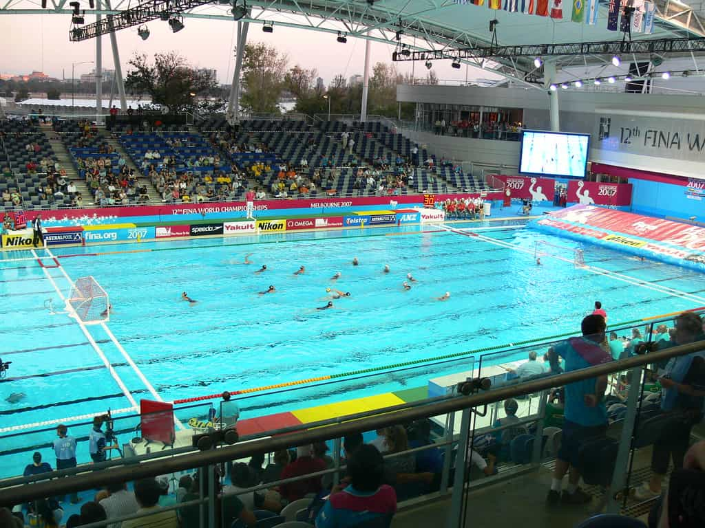

About Water Polo
Water polo is a full-contact, competitive aquatic sport played between two teams of seven players. It is played across four quarters in a deep pool so that no one can touch the bottom. It has been a sport in the modern Olympics since 1900 and a women's sport since 2000.
Equipment
Cap
Ball
Suit
Goal Net